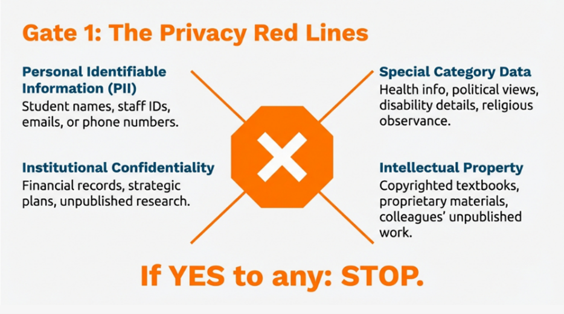
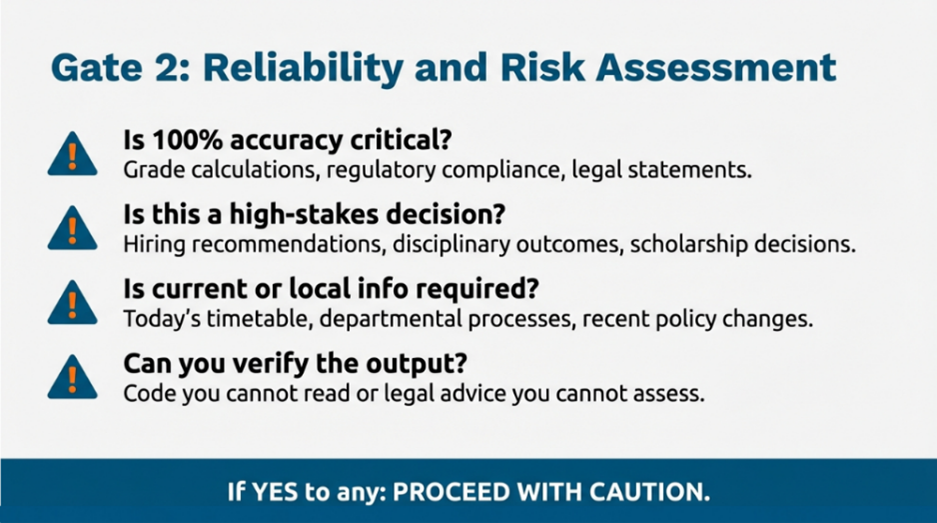
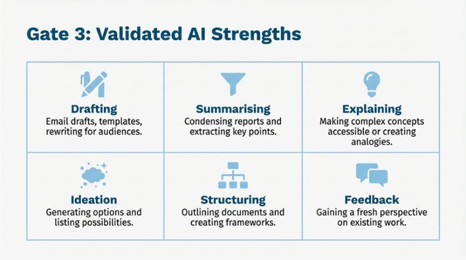
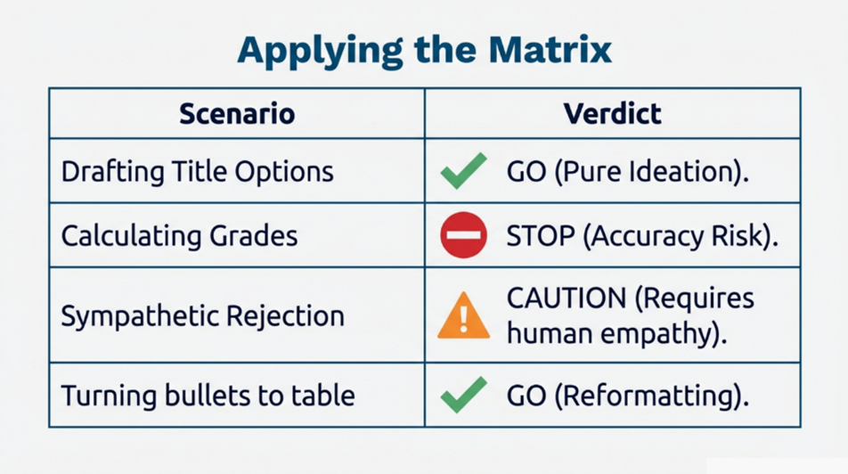

MODULE 5 · Module 5: The Decision Matrix
Module 5: The Decision Matrix
The Three Gates
Introduction: Two Different Questions
You now understand the Red Lines - what you must never input into AI. But responsible AI use requires answering two separate questions:
- Can I use AI for this? (Is it safe and permitted?)
- Should I use AI for this? (Is it effective and appropriate?)
Something can be permitted but still be a bad idea. For example:
- Asking AI to calculate exam grade boundaries is not a privacy breach, but it is a bad idea because AI is unreliable at maths
- Asking AI to draft a bereavement condolence message is not illegal, but it may be inappropriate because such messages need genuine human empathy
This module gives you a practical tool - the Decision Matrix - to answer both questions quickly, every time.
Think of the Decision Matrix as a traffic light system. Before using AI for any task, run it through three "gates" in order. You must pass all three to proceed safely.
Gate 1: The Privacy Gate (Can I?)

Stop if the task contains Personal Identifiable Information (student names, staff names, ID numbers, email addresses, phone numbers), Special Category Data (health information, disability details, religious observance, political views), confidential institutional data (unpublished research, financial records, strategic plans), others' intellectual property, or information that could indirectly identify individuals.
If YES to any of these: STOP. Your options are to anonymise first (remove all identifying information, then reassess), do it manually (some tasks simply should not involve AI), or seek guidance from your Data Protection Officer or line manager.
If NO to all: proceed to Gate 2.
Gate 2: The Accuracy Gate (Should I?)

Proceed with caution if 100% accuracy is critical (grade calculations, regulatory compliance, legal statements), this is a high-stakes decision affecting someone's life or career (scholarship decisions, hiring recommendations, disciplinary outcomes), the task requires current or local information (today's timetable, recent policy changes), the task involves precise numbers or calculations (budget totals, statistical analysis), or you would struggle to verify the output.
If YES to any: use AI for a first draft but verify every fact and calculation independently. Use appropriate tools for calculations (Excel). Seek expert review if you cannot verify the output yourself.
If NO to all: proceed to Gate 3.
Gate 3: The Suitability Gate (Is AI the right tool?)

Green light if the task involves: drafting and reformulating (email drafts, rewriting for different audiences), summarising content you provide (condensing reports, extracting key points), explaining and simplifying (making complex concepts accessible), ideation and brainstorming (generating options, suggesting approaches), structuring and organising (outlining documents, creating frameworks), reformatting (converting lists to tables, standardising layouts), or getting feedback on your own drafts.
If the task fits these categories: GO - with review. Remember to verify any facts, check for bias, and edit to match your voice and the specific context.
If the task does not fit: consider whether the "old way" is faster, more reliable, or more appropriate.
Magic The Tool: Traffic Lights
🛑 Red (Can I?)
The question: "What data am I about to input?"
This gate catches tasks that would breach the Red Lines from Module 4.
Stop if ANY of these apply:
Check | Examples |
|---|---|
Contains Personal Identifiable Information (PII)? | Student names, staff names, ID numbers, email addresses, phone numbers |
Contains Special Category Data? | Health information, disability details, religious observance, political views |
Contains confidential institutional data? | Unpublished research, financial records, strategic plans, security information |
Contains others' intellectual property? | Copyrighted textbooks, colleagues' unpublished work, proprietary materials |
Could identify individuals indirectly? | Small cohort + specific characteristic, unique circumstances |
If YES to any → 🛑 STOP
Your options:
- Anonymise first: Remove all identifying information, then reassess
- Do it manually: Some tasks simply should not involve AI
- Seek guidance: Ask your Data Protection Officer or line manager if genuinely unsure
If NO to all → Proceed to Gate 2
⚠️ Yellow (Should I?)
The question: "What happens if the AI gets this wrong?"
You have cleared the privacy check. Now assess whether AI is reliable enough for this task.
Proceed with caution if ANY of these apply:
Check | Examples | Why it's risky |
|---|---|---|
Is 100% accuracy critical? | Grade calculations, regulatory compliance, legal statements | AI makes confident errors |
Is this a high-stakes decision affecting someone's life or career? | Scholarship decisions, hiring recommendations, disciplinary outcomes | Requires human judgement |
Does this require current or local information? | Today's timetable, your department's specific process, recent policy changes | AI training data has a cutoff; may not know your context |
Does this involve precise numbers or calculations? | Budget totals, statistical analysis, date calculations | AI predicts digits, does not calculate |
Would I struggle to verify the output? | Code I cannot read, legal advice I cannot assess, technical claims outside my expertise | Cannot catch errors you cannot recognise |
If YES to any → ⚠️ CAUTION
Your options:
- Human-in-the-loop: Use AI for a first draft, but verify every fact and calculation independently
- Use appropriate tools: For calculations, use Excel. For current information, check primary sources.
- Seek expert review: If you cannot verify the output yourself, have someone who can review it before use
- Reduce the stakes: Use AI for brainstorming or structure, but write the final high-stakes content yourself
If NO to all → Proceed to Gate 3
✅ Green (Is AI the right tool?)
The question: "Is this task a good fit for AI's strengths?"
You have confirmed the task is safe and accuracy requirements are manageable. Now check whether AI will actually be helpful.
Green light if the task involves:
AI Strength | Examples | Why AI helps |
|---|---|---|
Drafting and reformulating | Email drafts, letter templates, rewriting for different audiences | Pattern-based text generation is AI's core capability |
Summarising provided content | Condensing reports, extracting key points from documents you supply | Compression of provided information (not retrieval) |
Explaining and simplifying | Making complex concepts accessible, creating analogies | Translating between registers and complexity levels |
Ideation and brainstorming | Generating options, suggesting approaches, listing possibilities | Quantity of ideas without commitment to any |
Structuring and organising | Outlining documents, creating frameworks, suggesting headings | Pattern recognition for structure |
Reformatting and transforming | Converting lists to tables, changing formats, standardising layouts | Mechanical transformation tasks |
Feedback on your drafts | "How could I make this clearer?", "What have I missed?" | Fresh perspective on your existing work |
If your task fits these categories → ✅ GO
Remember:
- Review the output before using it
- Verify any facts, citations, or statistics
- Check for bias and inappropriate assumptions
- Edit to match your voice and the specific context
If your task does not fit → Consider alternatives
Not every task benefits from AI. Sometimes the "old way" is faster, more reliable, or more appropriate:
- Quick personal messages → Just write them
- Simple factual lookups → Search your institution's website or documentation
- Emotional or sensitive communications → Human authorship matters
- Tasks requiring real-time information → Check primary sources directly
Applying the Matrix
Activity: Apply the Matrix

"Generate five possible titles for a workshop on digital accessibility." Which gate applies?
"Calculate the final module marks for my 45 students based on their component grades and weightings." Which gate applies?
"Reformat my bullet-point lecture notes into a structured handout with headings and subheadings." Which gate applies?
If a task passes Gate 1 (privacy), you can always go ahead and use AI without further checks.
Making It Automatic
The goal is for this decision process to become instinctive. In weeks 1-2, deliberately pause before each AI use and mentally run through the three gates. By weeks 3-4, you will notice when you are about to skip the check. After week 5, the assessment becomes automatic - you will feel uncomfortable when something does not pass the gates.
When in doubt: default to caution (do it manually or seek guidance), ask a colleague, contact your institution's AI lead or Data Protection Officer, or check your institutional policy.
Summary
The Decision Matrix is a three-gate traffic light system: Gate 1 (Privacy) - does this involve personal or confidential data? Gate 2 (Accuracy) - what happens if the AI is wrong? Gate 3 (Suitability) - is this drafting, summarising, explaining, or brainstorming? Only proceed when all three gates are clear. The framework saves time by preventing mistakes before they happen.